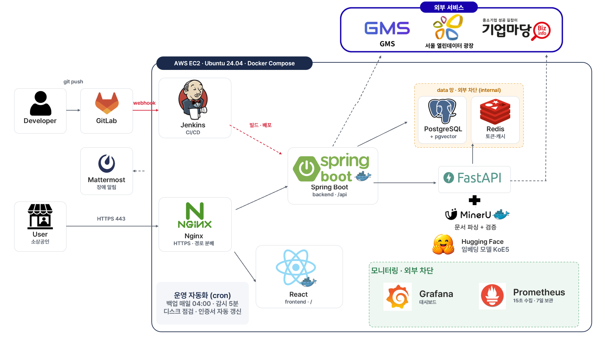
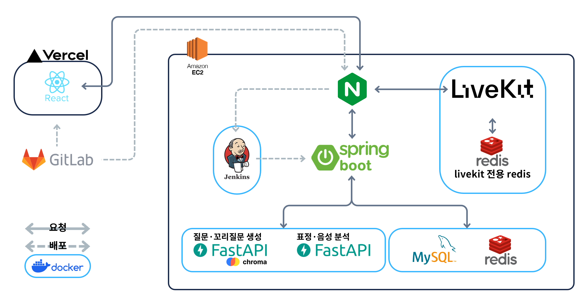
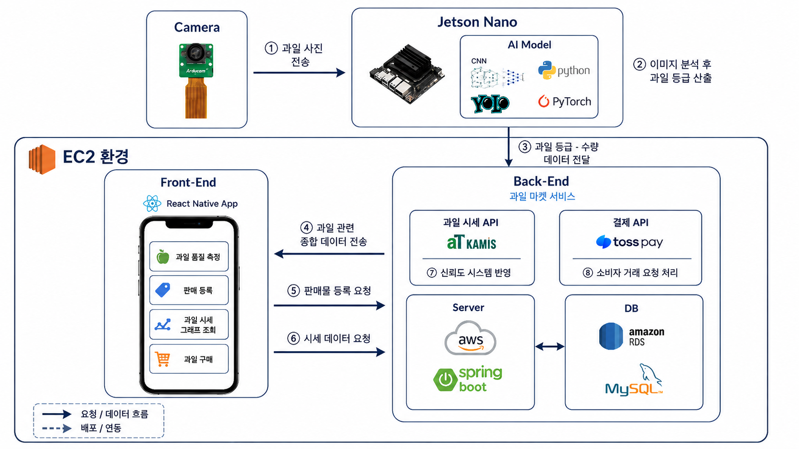

Java
객체지향 설계와 Spring Boot 기반 백엔드 프로젝트에서 주 언어로 사용했습니다.
Portfolio · Backend Developer
Backend Developer
기능 구현에서 끝나지 않고, 운영 환경과 데이터 흐름·성능 병목까지 확인하는 Java/Spring 백엔드 개발자
01 / Profile

Backend Developer
기능 구현을 넘어, 운영 흐름과 성능까지 확인하는 백엔드 개발자입니다.
SOBI
정책자금 탐색·자금 조합·신청 서류 작성 및 검증을 지원하는 소상공인 통합 지원 서비스
Spring Boot–FastAPI 문서 생성 연동, HWPX Document Agent와 지원금·대출 자금 조합 추천 기능을 구현했습니다.
Ait
AI 맞춤형 모의면접 및 실시간 화상 면접 스터디 플랫폼
문서·AI 서버 연동, LiveKit 실시간 통신, 배포 환경 구성과 성능 테스트를 담당했습니다.
BRIX
AI 기반 과일 당도 예측·자동 분류 및 직거래 플랫폼
Spring Security·JWT 인증, Redis 기반 토큰·인증번호 관리, S3 이미지 생명주기와 인기 상품 캐싱을 구현했습니다.
Everyday Friends
라즈베리파이 기반 감정 분석 맞춤형 힐링 서비스
Spring Boot·MySQL 기반 백엔드와 세션 인증, 감정 상태 기반 콘텐츠·광고 REST API를 구현했습니다.
객체지향 설계와 Spring Boot 기반 백엔드 프로젝트에서 주 언어로 사용했습니다.
REST API, Security, 외부 API 연동, 트랜잭션 설계 등 백엔드 서비스 전반에 활용했습니다.
Entity 관계 설계, JPQL, Fetch Join과 트랜잭션 처리에 활용했습니다.
MySQL · PostgreSQL
서비스 데이터 모델링과 쿼리 작성, PostgreSQL 기반 Schema 변경과 데이터 처리 경험이 있습니다.
인증 상태 TTL과 캐싱 등 상태 관리 기능에 프로젝트 단위로 활용했습니다.
Spring Boot, FastAPI, PostgreSQL 등의 서비스를 Docker Compose 기반으로 구성하고 배포했습니다.
문제를 정의하고 운영 가능한 구조로 해결한 세 프로젝트입니다.
01 · TEAM PROJECT
정책자금 탐색부터 자금 조합, 신청 서류 작성·검증까지 지원하는 소상공인 통합 지원 서비스
Java · Spring Boot · PostgreSQL · FastAPI · Docker · LLM
HWPX Document AutomationView Case Study →
02 · TEAM PROJECT
AI 모의면접과 실시간 화상 스터디를 결합한 면접 준비 플랫폼
Java · Spring Boot · Redis · Docker · AWS · LiveKit
CPU 87.8% → 63.0%View Case Study →
03 · TEAM PROJECT
AI 과일 품질 측정 장치와 모바일 직거래 서비스를 연결한 플랫폼
Spring Boot · JWT · Redis · S3 · MySQL
Backend OwnershipView Case Study →
정책자금 탐색부터 자금 조합, 신청 서류 작성·검증과 상환 관리까지 지원하는 소상공인 통합 지원 서비스
소상공인의 사업자·금융 정보를 기반으로 신청 가능한 지원사업과 대출을 탐색하고, 필요한 자금에 맞는 상품 조합을 추천하는 서비스입니다. 신청 단계에서는 필요한 서류를 안내하고 HWPX 신청서 자동 작성과 제출 서류 검증을 지원하며, 이후 대출 상환 관리까지 하나의 서비스에서 제공합니다.
Spring Boot가 인증·사업자·신청·자금 조합 등 서비스 로직을 담당하고 PostgreSQL·Redis와 금융 API를 연동합니다. FastAPI AI 서버는 지원사업 판정·서류 처리·Document Agent 기능을 담당하며, Spring Boot는 인증된 사용자의 요청과 작성 대상 Template을 검증한 뒤 문서 생성 요청을 전달합니다.
작성 가능한 문서와 최신 완료 Template을 먼저 확인한 뒤 FastAPI Document Agent에 생성을 요청하도록 구성했습니다. 장시간 진행될 수 있는 LLM·파일 생성 작업 동안 DB Transaction을 유지하지 않도록 데이터 조회와 외부 I/O의 경계를 분리했습니다. 또한 생성 결과의 문서·Template ID, UUID, 파일명, MIME Type과 비어 있지 않은 본문을 검증한 후 사용자에게 HWPX 파일을 전달합니다.
LLM의 Field 의미 분석과 실제 사용자 데이터 조회 책임을 분리했습니다. DIRECT·COMPUTED·GENERATED·USER_INPUT으로 Source 유형을 구분하고, 직접 조회·계산·문장 생성·사용자 직접 입력의 처리 정책을 각각 분리했습니다.
신청서의 물리적 작성 위치를 기준으로 필요한 값만 최소 수정하고 기존 Paragraph·Run·Style 구조는 최대한 보존했습니다. 작성 전 대상 구조를 검증하고 생성 후에는 HWPX를 다시 파싱해 기대 문자열과 실제 결과를 대조합니다.
서로 다른 지원사업과 대출 상품을 FundingCandidate라는 공통 모델로 추상화하고, 최대 3개 상품 조합에서 최소·최대 가능 금액을 검사했습니다. 지원금을 우선 배정하고 이후 저금리 대출을 배치해 총상환액·월납입액·평균금리 등을 기준으로 추천 조합을 제공합니다.
금융 API별 Request·Response DTO는 도메인에 맞게 분리하면서 공통 Header 생성과 HTTP 요청, 업무 성공 코드 검증은 공통 Client로 구성했습니다. 이를 계좌·대출·상환 API에서 재사용했습니다.
신청서 전체 작성을 LLM에 맡기지 않고, 문서의 물리 구조 분석·Field 의미 판단·실제 데이터 조회·문서 쓰기 책임을 단계별로 분리했습니다. LLM은 Field의 의미와 Source를 판단하고, 실제 값은 검증된 Source Registry를 통해 조회하거나 계산한 뒤 Writer가 원본 HWPX 구조에 반영합니다.
원본 신청서
HWP → HWPX 변환 및 작성 포맷 정규화
Table · Cell · Paragraph · 물리 위치 추출
실제 입력 가능한 Field 후보 추출
LLM 기반 Field 의미·Source 분석
실제 사용자·사업자·금융 데이터 조회 및 계산
HWPX 원본 구조를 유지하며 값 삽입
검증된 신청서 초안 생성
Field의 의미를 분석하는 책임과 실제 값을 가져오는 책임을 분리하고, 값의 성격에 따라 Source 처리 정책을 구분했습니다.
사용자·사업자 정보처럼 DB에서 직접 조회할 수 있는 값
대표자명 · 사업자번호 · 주소여러 데이터를 조합하거나 기간 조건에 따라 계산해야 하는 값
최근 N개월 매출 · 기간별 합계검증된 구조화 데이터를 근거로 문장을 생성해야 하는 값
사업 내용 · 서술형 작성 항목자동으로 결정하지 않고 사용자가 직접 입력해야 하는 값
서명 · 동의 · 확인이 필요한 정보LLM이 실제 값을 임의로 생성해 Writer에 전달하지 않고, 정의된 Source 정책과 검증을 통과한 데이터만 문서 작성 단계에서 사용하도록 구성했습니다.
Case 01 · Document Structure
Case 02 · LLM Reliability
AI 맞춤형 모의면접과 실시간 화상 면접 스터디를 통합한 개발자 면접 준비 플랫폼
사용자가 등록한 이력서·자기소개서·Repository 정보를 바탕으로 개인화된 면접 질문을 생성하고, 답변·표정·음성 분석 결과를 종합해 리포트를 제공한다. LiveKit 기반 화상 스터디와 참여자 상호평가도 함께 제공한다.
Nginx가 HTTPS 진입점을 맡고 Spring Boot가 사용자·서비스 상태를 관리하며, Redis·MySQL과 외부 AI/실시간 시스템을 연결한다.
이력서·자기소개서 저장 요청과 GMS 분석 작업을 이벤트 기반 비동기 구조로 분리해, 사용자의 저장 흐름과 처리 시간이 긴 분석 작업을 독립적으로 처리했다.
문서 수정 시 NFC 정규화 후 Levenshtein Distance로 변경 비율을 계산하고, 10% 이상 변경된 경우에만 재분석 이벤트를 발생시켰다.
사용자·세션 검증 후 개별 Access Token을 발급하고, 최대 8명 Room 제한·Docker 운영·Redis 연동·WebRTC용 TCP/UDP 포트를 구성했다.
LiveKit Room과 별개로 스터디 세션 참여 상태를 관리하고, Webhook 이벤트를 Spring Boot Endpoint에 연결해 실시간 상태와 서비스 데이터를 연계했다.
방장이 세션을 종료하기 전, 각 참여자가 본인을 제외한 모든 참여자에게 상호평가를 제출했는지 검사하고 미제출 사용자 정보를 반환하는 API를 만들었다.
단일 API 반복 호출 대신 실제 사용 순서인 로그인 → 대시보드 → 내 스터디 그룹 → 그룹 상세 → 면접 리포트를 시나리오로 구성했다. k6 지표와 CPU·Run Queue·Java Process 같은 시스템 지표를 동시에 수집해 병목을 판단했다.
| 부하 | 평균 RPS | 평균 응답 | 1초 단위 p95 중앙값 | CPU 평균 | Run Queue 평균 |
|---|---|---|---|---|---|
| 200 VU | 93.2 | 30.7 ms | 33.4 ms | 29.2% | 1.66 |
| 300 VU | 138.8 | 35.0 ms | 44.5 ms | 41.7% | 2.61 |
| 400 VU | 185.1 | 35.0 ms | 51.0 ms | 55.4% | 3.99 |
| 500 VU | 230.5 | 44.9 ms | 68.0 ms | 70.0% | 6.21 |
| 600 VU | 272.3 | 78.0 ms | 130.8 ms | 87.8% | 11.19 |
| 부하 | 평균 RPS | 평균 응답 | p95 | CPU 평균 | Run Queue |
|---|---|---|---|---|---|
| 600 VU | 278.4 | 28.3 ms | 42.2 ms | 63.0% | 4.94 |
| 700 VU | 323.0 | 39.1 ms | 63.7 ms | 74.4% | 6.99 |
| 800 VU | 352.7 | 142.2 ms | 230.0 ms | 87.1% | 11.91 |
700 VU까지는 완만한 증가, 800 VU에서 CPU가 다시 높은 수준으로 상승했다.
800 VU에서 평균 142.2ms, p95 230ms까지 증가해 요청 처리 대기가 커진 구간을 확인했다.
Case 01 · Performance
Case 02 · AI Cost
Case 03 · Network
Case 04 · Business Logic
RGB 카메라와 AI 기반 과일 당도 예측·자동 분류 장치, 모바일 직거래 플랫폼을 연결한 시스템
RGB 카메라와 AI 모델(CNN + YOLO)을 활용하여 과일의 당도를 비파괴적으로 측정하고, Jetson Nano 기반 자동 분류 장치 및 모바일 직거래 플랫폼과 연동하는 스마트 농업 서비스
Access/Refresh Token을 분리하고 Refresh Token을 Redis에 저장해 재발급 검증과 로그아웃 시 무효화를 처리했다.
인증번호를 애플리케이션 메모리에서 분리해 Redis에 저장하고 TTL로 자동 만료되도록 구성했다.
profiles/, products/ 경로와 UUID 파일명을 사용하고 데이터 수정·삭제 시 기존 객체도 함께 제거했다.
변경 주기가 짧지 않은 반복 조회 데이터를 Redis에 저장하고, 캐시 미스 시 DB 조회 후 재저장하는 fallback 구조를 적용했다.
판매자·과일 종류 기준 S/A/B/C 등급 결과를 누적 관리해 AI·하드웨어 결과를 서비스 데이터로 연결했다.
Additional system integration — Jetson Nano 자동 분류 장치의 메인 컨트롤 코드를 직접 전체 구현했다.
Case 01 · State Storage
Case 03 · Cache Design